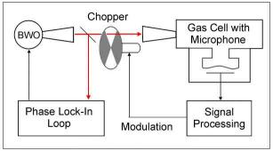

Instruments RAD Spectrometer RAD Spectrometer
Spectrometer with frequency synthesizer and radio acoustical detection of absorption (RAD Spectrometer)
The spectrometer features:
- Coherent radiation source with precision frequency control
- Acoustical detection of absorption
- Amplitude modulation & 1F Lock-in amplification
- Line shape processing software
- Pressure range: optimal 0.1 – 10 Torr usable 0.01 – 100 Torr
- Frequency range: 35 – 1500 GHz
- Typical absorption sensitivity (at time constant 1s.) ~ 10-8 cm-1
- Studied gas temperature range from -35C up to +75C
|
 |
Detailed description of RAD spectrometer
Example of recording
demonstrating RAD spectrometer sensitivity.
Example of application of simplest
version of RAD spectrometer (without frequency synthesizer) for broad-band
high resolution spectroscopy.
Example of lineshape, line broadening
and line shifting studies with BWO based submillimeter-wave frequency synthesizer
with RAD gas cell.
Example of line broadening parameter
measurements accuracy achieved by RAD spectrometer.
Demonstration of minimization of systematical errors
Example of broadband study of molecular spectrum using submillimeter frequency synthesizer and RAD gas cell -
Teraherz spectrum of oxygen.
Example of temperature dependence study -
Collisional broadening of O2 lines.
Teraherz spectrum of OCS.
|